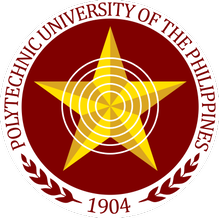

|  |
 |
Mission
To provide high quality undergrauate programs and globally - competitive human capital development and community services
accessible particularly to the students of the municipality.
Vision
PUP Santa Maria envisions to offer the students of the municipality quality, relevant, responsive, and excellent tertiary education
aimed to produce graduates that are future leaders are expert in their chosen field of endeavor and contributes to the full
development of the family, community, society, and the nation of large.
Goals and Objectives
- To provide quality tertiary education relevant to the industry requirements of globalization.
- To offer curricula reponsive to the need of the industry and society.
- To enchance the development of the critical thinking and mental growth of the client.
- To inculcate social awareness and desirable value to the minds of every student.
- To develop partnerships and linkages with industies.
- To ensure the highest quality and affordable instructions to the clients.
- To produce globally competitive graduates.